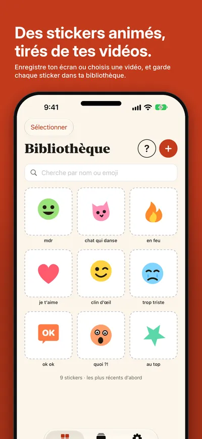
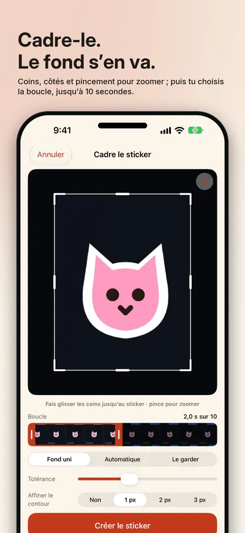
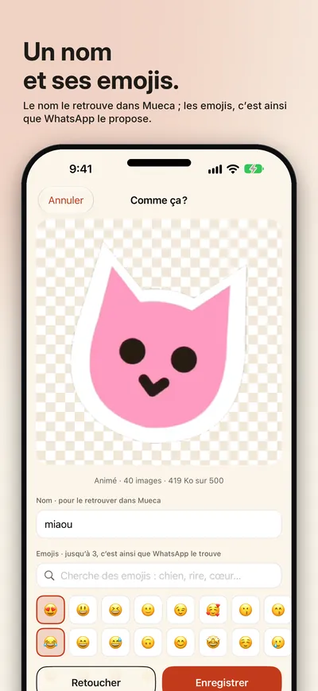
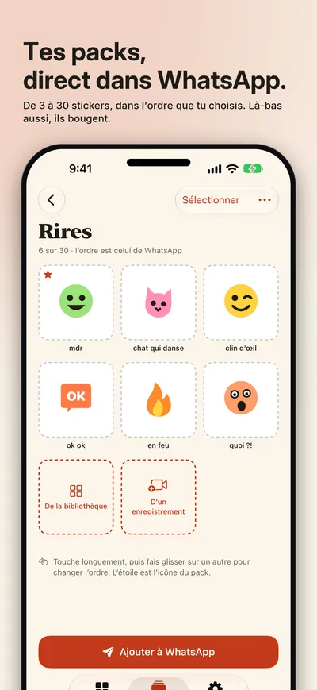
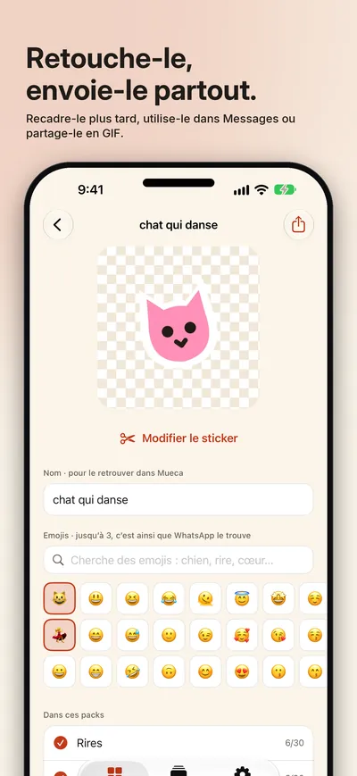
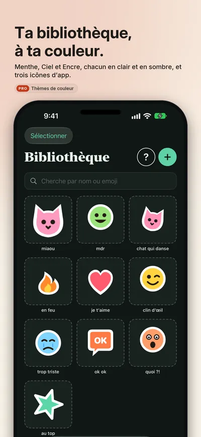

Seize Apps · iOS
Mueca
Mueca transforme quelques secondes de n’importe quelle vidéo en un sticker qui bouge. Enregistre ton écran ou choisis une vidéo dans Photos, amène le cadre sur ce que tu veux, choisis la boucle, et le fond s’en va, directement sur ton iPhone. Chaque sticker reste dans ta propre bibliothèque, avec son nom et ses emojis, prêt à rejoindre des packs pour WhatsApp, à partir depuis Messages ou à être partagé en GIF.






Ce qu’elle fait
Une seule chose, bien faite.
- 01 / CADRER
D’une vidéo à un sticker
Fais glisser les coins et les côtés jusqu’au sticker, pince pour affiner et choisis la boucle, jusqu’à 10 secondes. Le fond s’en va : uni, comme dans une discussion, ou automatique sur n’importe quel fond, et le contour s’affine s’il reste un halo. Donne-lui un nom pour le retrouver dans Mueca et jusqu’à trois emojis, c’est ainsi que WhatsApp te le propose.
- 02 / GARDER
Une bibliothèque qui grandit
Tous tes stickers au même endroit, avec la recherche par nom ou par emoji, et tu peux en modifier un quand tu veux : le recadrer, retirer le fond, affiner le contour. Sauvegardés dans ton propre iCloud, les mêmes sur tous tes appareils.
- 03 / ENVOYER
Des packs, dans tes discussions
Réunis 3 à 30 stickers dans un pack, mets-les dans l’ordre, choisis son icône et ajoute-le à WhatsApp d’un toucher. Dans Messages, Mueca est dans le tiroir des apps ; et n’importe quel sticker part en GIF animé vers l’app de ton choix. Gratuit jusqu’à 10 stickers et 1 pack ; Mueca Pro retire les limites et ajoute des thèmes de couleur et des icônes d’app : un achat unique, avec un essai gratuit de 30 jours.
Confidentialité
À toi, pas à nous.
Mueca n’a ni compte ni publicité. Elle ne voit que la vidéo que tu choisis, découpe le sticker sur ton iPhone et ne garde pas la vidéo. Tes stickers et tes packs restent sur ton appareil et dans ton propre iCloud. Des statistiques d’utilisation anonymes et maison, jamais une vidéo, un sticker, un nom ni un emoji, que tu peux désactiver dans Réglages. Fais des stickers de ce qui est à toi : ce que d’autres ont créé leur appartient.
Une app de Seize Apps.